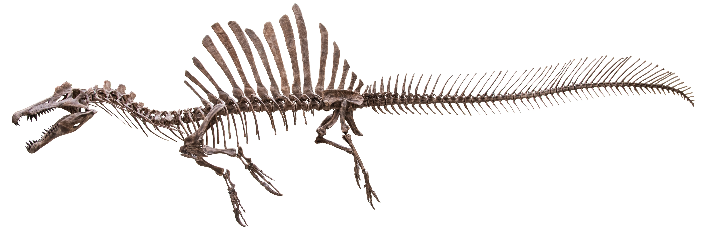

O Spinosaurus é um dos dinossauros mais intrigantes e enigmáticos da era dos dinossauros. Vivendo durante o
período Cretáceo, há cerca de 112 a 93 milhões de anos, o Spinosaurus se destaca não apenas por seu tamanho
colossal, mas também por suas adaptações únicas que o tornam um dos poucos dinossauros conhecidos a ter uma
vida semi-aquática.
Características Principais
Tamanho e Estrutura: O Spinosaurus é um dos maiores dinossauros carnívoros já descobertos,
com estimativas indicando que podia atingir comprimentos de até 15 metros, ou até mais, e pesar entre 7 a 20
toneladas. Seu corpo era longo e estreito, com um crânio alongado e uma estrutura corporal adaptada para um
estilo de vida parcialmente aquático.
O Queixo e Dentes: O crânio do Spinosaurus era notavelmente diferente dos outros terópodes,
com um formato semelhante ao de um crocodilo e dentes cônicos e afiadas, ideais para capturar peixes. Essa
adaptação sugere que ele tinha uma dieta baseada em peixe, embora também pudesse ter caçado outros animais.
Nadadeiras e Barbatana: Uma das características mais distintivas do Spinosaurus
é a sua grande barbatana nas costas, formada por espinhos que podem ter chegado a 1,8 metros de altura.
Essa estrutura não apenas dava ao Spinosaurus um aspecto imponente, mas também é considerada uma
adaptação para a vida em ambientes aquáticos, ajudando a estabilizar o corpo na água.

Comportamento e Dieta
Semi-Aquático: O Spinosaurus é único entre os grandes dinossauros carnívoros por suas
adaptações que indicam um estilo de vida semi-aquático. Evidências sugerem que ele passava uma parte
significativa do seu tempo em ambientes aquáticos, como rios e lagos, onde caçava peixes e possivelmente
outros animais aquáticos.
Dieta: Seus dentes cônicos e a forma do seu crânio indicam que a principal dieta do Spinosaurus
era composta de peixe. No entanto, como muitos grandes predadores, ele também pode ter se alimentado de outros
animais que encontrava em seu habitat.
Paleontologia e Descobertas
Descoberta e Fósseis: Os primeiros fósseis de Spinosaurus foram descobertos no Egito no início do século XX.No
entanto, muitos dos primeiros espécimes foram perdidos durante a Segunda Guerra Mundial. Novas descobertas e
pesquisas têm ajudado a preencher as lacunas no nosso entendimento sobre este dinossauro fascinante.
Impacto e Estudos: O Spinosaurus tem sido o foco de intensos estudos e debates dentro da
paleontologia devido às suas características únicas. Sua adaptação à vida aquática desafia as ideias tradicionais
sobre a vida dos dinossauros e tem inspirado uma série de pesquisas e representações na mídia popular.
Curiosidades
Nome: O nome "Spinosaurus" significa "Lagarto Espinhoso", uma referência aos espinhos proeminentes
na sua coluna vertebral.
Habilidades Aquáticas: As adaptações do Spinosaurus, incluindo suas nadadeiras e estrutura
corporal, indicam que ele era um nadador eficiente, o que o diferencia de outros grandes dinossauros carnívoros
que eram predominantemente terrestres.
Resumo de informações sobre o Spinosaurus
Classificação
Reino: Animalia
Filo: Chordata
Classe: Reptilia
Ordem: Saurischia
Família: Spinosauridae
Gênero: Spinosaurus
Espécie: S. aegyptiacus
Características Físicas
Comprimento: Entre 15 e 18 metros
Altura: Cerca de 6 metros até a crista da vela
Peso: Entre 7 e 20 toneladas
Cabeça: Longa e estreita, semelhante à de um crocodilo
Dentes: Cônicos, adaptados para pegar peixes
Braços: Relativamente longos, com garras afiadas
Vela dorsal: Estrutura distinta, possivelmente usada para regulação de temperatura ou exibição
Hábitat e Período
Período: Cretáceo Superior (cerca de 112 a 93 milhões de anos atrás)
Localização: Norte da África
Ambiente: Zonas costeiras, rios e manguezais
Dieta
Carnívoro, com uma dieta predominantemente piscívora
Alimentação: Peixes grandes, como o Onchopristis, e possivelmente pequenos dinossauros
Adaptado para caçar tanto em terra quanto na água
Curiosidades
Significado do nome: "Lagarto espinhoso"
Primeiro fóssil encontrado: 1912
Único dinossauro conhecido adaptado para um estilo de vida semi-aquático
A crista dorsal é uma das características mais icônicas e ainda é tema de debates entre cientistas